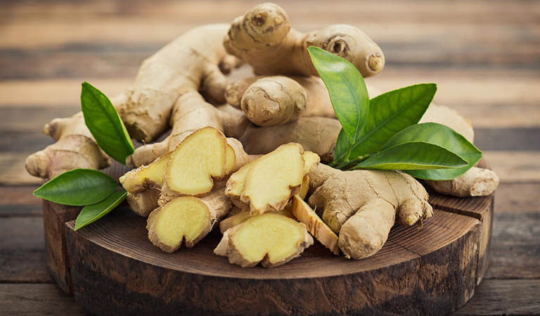
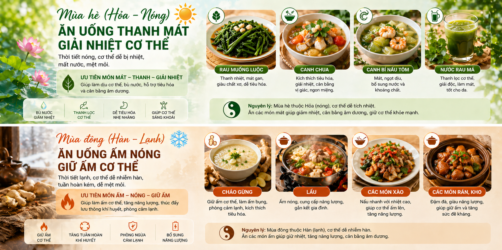

BẢN GIAO HÒA ÂM DƯƠNG - NGŨ HÀNH TRONG MÂM CƠM NGƯỜI VIỆT
Bạn có bao giờ thắc mắc vì sao ốc luộc thường được ăn kèm với mắm gừng? Câu hỏi tưởng chừng đơn giản này thực chất lại mở ra một lớp nghĩa sâu xa về triết lý âm dương - ngũ hành, nền tảng tư duy đã âm thầm định hình văn hóa ẩm thực của người Việt từ bao đời nay.
Theo quan niệm phương Đông, vũ trụ khởi sinh từ trạng thái “vô cực”, một trạng thái nguyên sơ chưa phân định, rồi tách thành hai lực đối lập là âm và dương. Hai yếu tố này không tồn tại riêng rẽ mà luôn vận động, chuyển hóa và bổ sung cho nhau, tạo nên sự cân bằng động giúp duy trì sự sống và mọi hiện tượng trong tự nhiên.
Nguồn gốc triết lý âm dương - ngũ hành
GS. Trần Ngọc Thêm đã đưa ra những bằng chứng ngôn ngữ học thuyết phục khi cho rằng hai từ “âm dương” vốn bắt nguồn từ cặp khái niệm “mẹ” và “trời” (ina - yang) trong các ngôn ngữ Đông Nam Á cổ, tạo nên một hệ giá trị khác biệt hoàn toàn với tư duy phương Bắc. Điểm mấu chốt nằm ở trật tự "âm trước dương sau" - một đặc trưng phản ánh đậm nét truyền thống trọng nữ của người dân lúa nước, khác biệt với trật tự "dương trước âm sau" (như Thiên - Địa, Phụ - Mẫu) của truyền thống trọng nam trong văn hóa Trung Hoa.
Điều này cho thấy cặp khái niệm âm dương được hình thành trên cơ sở tổng hợp hai cặp phạm trù sinh tồn thiết yếu là “mẹ - cha” và “đất - trời”, nơi người phụ nữ và đất đai được tôn vinh như những thực thể khởi đầu của sự sống
ThS. Nguyễn Ngọc Thơ củng cố thêm quan điểm này bằng cách liệt kê hàng loạt biểu hiện của tư tưởng âm dương ngũ hành trong mọi khía cạnh phong tục, từ tập quán ăn uống đến những truyền thuyết cổ xưa, minh chứng cho tính bản địa và sự lưỡng phân lưỡng hợp vốn có của văn hóa Việt.
Đối với người Việt Nam, triết lý âm dương - ngũ hành không phải là những định nghĩa trừu tượng mà là những trải nghiệm thực tế được đúc kết qua hàng ngàn năm chung sống với nghề trồng lúa nước
Nhân dân ta đã nhận diện thế giới thông qua những cặp đối lập tự nhiên gắn liền với sự sống còn như nắng - mưa qua câu nói “nắng không ưa, mưa không chịu”, hay đất - trời trong hình ảnh “bán mặt cho đất, bán lưng cho trời”, và cả sương gió trong nỗi vất vả “dầm sương dãi gió”. Bản thân cây lúa - linh hồn của văn minh Việt - cũng chính là một minh chứng sống động nhất cho sự hòa hợp âm dương: gốc rễ ngâm dưới bùn nước sâu (thuộc âm) nhưng ngọn lá lại vươn cao đón nắng gió rạng rỡ (thuộc dương). Sự kỳ diệu của tự nhiên còn được thể hiện qua hiện tượng hoa lúa chỉ phơi màu vào giờ Ngọ (giữa trưa, lúc dương khí cực thịnh) và giờ Tý (nửa đêm, lúc âm khí cực thịnh) để có thể tiếp thu trọn vẹn tinh hoa của cả đất và trời, từ đó mới có thể kết tinh thành hạt ngọc nuôi đời.
Tiếp nối từ sự cân bằng của âm dương, thuyết ngũ hành chính là bước đi cụ thể hơn để giải thích cách thế giới này vận hành
Nếu âm dương là hai mặt đối lập như "Ngày và Đêm", thì Ngũ Hành là năm nhóm yếu tố gồm: Kim (Kim loại), Mộc (Cây cối), Thủy (Nước), Hỏa (Lửa) và Thổ (Đất).
Người xưa quan sát thấy rằng mọi thứ trên đời không đứng yên mà luôn tác động lẫn nhau, nên họ đã dùng năm hình ảnh gần gũi này để tượng trưng cho năm trạng thái năng lượng. Điểm thú vị nhất của Ngũ Hành chính là sự kết nối: chúng có thể hỗ trợ nhau cùng lớn mạnh (gọi là Tương sinh, như nước nuôi cây phát triển) hoặc kiềm chế lẫn nhau để giữ thế cân bằng (gọi là Tương khắc, như nước có thể dập tắt lửa). Chính sự luân chuyển không ngừng giữa năm yếu tố này đã tạo nên một dòng chảy cuộc sống hài hòa, nơi mọi sự vật đều có vị trí và vai trò riêng để cùng nhau tồn tại.Triết lý âm dương - ngũ hành trong văn hóa Việt Nam không chỉ là một hệ thống lý thuyết được vay mượn mà là một sản phẩm tự thân của tư duy nông nghiệp, mang tính nguyên thủy, tự phát và bền bỉ. Khi đi vào đời sống, triết lý này không chỉ dừng lại ở mức tư tưởng mà trở thành nguyên tắc, trong đó ẩm thực là một minh chứng rõ nét và gần gũi nhất - nơi các món ăn hằng ngày không chỉ đơn thuần là thực phẩm mà còn là sự bài trí khoa học để đạt tới sự điều hòa giữa các tính chất hàn - nhiệt, giúp con người thích nghi với sự thay đổi của thời tiết và duy trì sức khỏe.
Nghệ thuật ăn uống tinh tế của người Việt
Người Việt ăn không chỉ để no, mà còn để hài hòa. Bởi thế, mỗi món ăn của người Việt, dù giản dị như bát canh cua hay cầu kỳ như mâm cỗ Tết, đều được vận hành theo một quy luật ngầm xuyên suốt: lấy dương bù âm, lấy nóng điều lạnh, lấy vị này trung hòa vị kia. Tất cả đều nhằm để cơ thể luôn giữ được trạng thái “hòa” - một sự cân bằng tinh tế giữa cơ thể và tạo vật. GS. Trần Ngọc Thêm, trong cuốn Cơ sở Văn hóa Việt Nam, đã chỉ ra rằng tư duy âm dương - ngũ hành thấm sâu vào đời sống người Việt, và ẩm thực là một trong những lĩnh vực thể hiện sự vận dụng ấy rõ nét nhất.
Nghệ thuật ăn uống tinh tế của người Việt
Trong ăn uống, người Việt đặc biệt chú trọng đến ba mặt quan hệ biện chứng âm dương hết sức mật thiết với nhau, đó là bảo đảm hài hòa âm dương của thức ăn; bảo đảm sự quân bình âm dương trong cơ thể và bảo đảm sự cân bằng âm dương giữa con người với môi trường tự nhiên.
Thứ nhất, bảo đảm hài hòa âm dương của thức ăn
Trong ẩm thực, âm dương được phân thành năm mức độ tương ứng với ngũ hành: hàn (lạnh, âm nhiều, hành Thủy), nhiệt (nóng, dương nhiều, hành Hỏa), ôn (ấm, dương ít, hành Mộc), lương (mát, âm ít, hành Kim) và bình (trung tính, hành Thổ). Mỗi nguyên liệu đều mang một hoặc nhiều mức độ âm dương nhất định, và nghệ thuật nấu ăn của người Việt trước hết là nghệ thuật kết hợp: lấy cái nóng bù cho cái lạnh, lấy cái ấm nâng đỡ cái mát.
Gừng là gia vị có tính dương nên thường được dùng chế biến cùng bí đao (tính hàn) và thịt vịt (tính lương)Nghệ thuật ăn uống tinh tế của người Việt
Điều đó giải thích tại sao gừng - một gia vị có tính nhiệt (dương), có tác dụng thanh hàn, giải cảm - hầu như không bao giờ vắng mặt khi nấu kèm các loại thực phẩm như bí đao (hàn), thịt vịt (lương), hay các món ốc, hến, cua. Gừng không phải chỉ để khử tanh, mà còn để giữ bụng ấm, tránh đau bụng, lạnh bụng. Cũng như vậy, rau răm có tính nhiệt (dương) luôn đi cùng trứng vịt lộn là hàn (âm) trong một cặp đôi “ăn liền”, giúp cơ thể cân bằng, dễ tiêu hóa và không bị đầy hơi.
Thứ hai, bảo đảm sự quân bình âm dương trong cơ thể Người Việt sử dụng thức ăn như là các vị thuốc để trị bệnh
Theo quan niệm xưa, mọi bệnh tật sinh ra là do cơ thể bị mất quân bình âm dương, và thức ăn chính là vị thuốc tốt nhất giúp cơ thể khỏi bệnh. Vì vậy, nếu người bệnh ốm do quá âm cần phải ăn đồ ăn dương (đau bụng lạnh, uống nước gừng); ngược lại nếu người bệnh ốm do quá dương thì cần phải ăn đồ ăn âm (bệnh kiết lị, ăn trứng gà rang với lá mơ)…
Về mặt cơ thể, mỗi người có một thể trạng khác nhau: người nhiệt (dương) thường xuyên nóng trong, dễ nổi mụn, nên cần ăn các thực phẩm mát, lạnh (âm) như rau má, bí đao, nước dừa; người hàn (âm) hay lạnh tay chân, sợ lạnh, nên cần ăn nhiều thực phẩm ấm, nóng (dương) như gừng, tỏi, thịt dê. Một món ăn ngon theo quan niệm Việt phải là món ăn “hợp” với người ăn, chứ không chỉ ngon theo một chuẩn vị tuyệt đối nào.
Người Việt sử dụng thức ăn như là các vị thuốc để trị bệnhThứ ba, bảo đảm sự quân bình âm dương giữa con người và môi trường
Người Việt Nam có tập quán ăn uống theo vùng khí hậu và theo mùa: mùa hè nóng (thuộc Hỏa), cơ thể dễ bị nhiệt, người ta ăn rau muống luộc, canh chua, canh bí nấu tôm, nước rau má; mùa đông lạnh, cơ thể dễ nhiễm hàn, người ta chuộng cháo gừng, lẩu, các món xào, rán, kho. Đó không phải là ăn theo sở thích đơn thuần, mà là một nguyên tắc bảo vệ sức khỏe đã được đúc kết qua hàng nghìn năm.
Ẩm thực Việt Nam cũng có sự phân hóa rõ rệt theo vùng miền
TS. Nguyễn Thanh Phong (Giảng viên Khoa Văn hoá học Trường Đại học Khoa học xã hội và Nhân văn, ĐHQG-HCM) cho biết ẩm thực Việt Nam cũng có sự phân hóa rõ rệt theo vùng miền, tầng lớp xã hội và tín ngưỡng, từ đó hình thành những đặc trưng riêng biệt. Tuy nhiên, điểm nổi bật chung là khả năng thích ứng linh hoạt với môi trường tự nhiên. “Chẳng hạn, vào mùa hè, người Việt thường ưu tiên các món thanh mát, ít chế biến như luộc, gỏi hoặc nộm thay vì các món kho đậm vị, nhiều nhiệt. Cách lựa chọn này giúp cân bằng cơ thể và phù hợp với điều kiện thời tiết, thể hiện rõ nét triết lý hài hòa trong văn hóa ẩm thực Việt” - Ông cho hay.
Nếu âm dương là nền tảng thì ngũ hành (Kim - Mộc - Thủy - Hỏa - Thổ) giúp cụ thể hóa sự hài hòa ấy vào từng món ăn
Trong thuyết ngũ hành, mỗi hành tương ứng với một vị: Mộc - chua, Hỏa - đắng, Thổ - ngọt, Kim - cay, Thủy - mặn; cũng tương ứng với một màu sắc: Mộc - xanh, Hỏa - đỏ, Thổ - vàng, Kim - trắng, Thủy - đen. Người Việt không ăn một vị duy nhất, cũng không chỉ nhìn một màu duy nhất. Một bát nước chấm chuẩn phải có đủ mặn (nước mắm - Thủy), chua (chanh - Mộc), ngọt (đường - Thổ), cay (ớt - Kim) và vị đắng thoang thoảng (từ vỏ chanh hoặc một chút vị chát - Hỏa).
Mâm cỗ ngày Tết là một bức tranh ngũ sắc: xanh của bánh chưng (Mộc), đỏ của dưa hấu (Hỏa), vàng của thịt kho trứng (Thổ), trắng của củ kiệu (Kim), đen của tiêu và mộc nhĩ (Thủy). Tính tổng hợp ấy đồng thời cũng đi cùng với tính “mực thước”: mọi thứ phải vừa phải, không quá nồng, không quá nhạt, không quá béo, không quá cay. Chính điều đó tạo nên cảm giác dễ chịu cả về thể chất lẫn tâm hồn - một trạng thái “hòa” đúng nghĩa mà ẩm thực Việt hướng tới.Mâm cổ ngày Tết là bức tranh ngũ sắc
Tính tổng hợp ấy đồng thời cũng đi cùng với tính “mực thước”: mọi thứ phải vừa phải, không quá nồng, không quá nhạt, không quá béo, không quá cay. Chính điều đó tạo nên cảm giác dễ chịu cả về thể chất lẫn tâm hồn - một trạng thái “hòa” đúng nghĩa mà ẩm thực Việt hướng tới.
Ẩm thực Việt - Trung: Đồng gốc triết lý, khác biệt món ngon
Từ ngàn xưa, Việt Nam và Trung Quốc đã có mối quan hệ mật thiết về địa lý, văn hóa lẫn tư tưởng sống. Dù chung gốc rễ Nho giáo và triết học Phương Đông, mỗi nước lại có sự chuyển hóa Triết lý Âm dương và Thuyết Ngũ hành vào mâm cơm gia đình truyền thống một cách rất riêng biệt.
Ẩm thực Việt - Trung: Đồng gốc triết lý, khác biệt món ngon
Tục ngữ Trung Quốc có câu: “Khai môn thất kiện sự, thái mễ dầu diêm tương thố trà” (Mỗi ngày có bảy thứ phải lo, rau, gạo, dầu, muối, tương, dấm, trà). Có thể thấy, đối với người Trung, ẩm thực không còn là nhu cầu sinh tồn thuần túy mà đã trở thành đời sống tinh thần cũng như phản ánh cách họ nhìn nhận xã hội.Từ thời khai thiên lập quốc, người Trung đã vận dụng tư tưởng triết học “Âm dương” để giải thích hai mặt đối lập và hỗ tương trong tất cả những hiện tượng của cuộc sống. Trong ẩm thực, họ chia thực phẩm thành hai loại là âm và dương để định vị chức năng sử dụng của chúng.
Chẳng hạn, chứng bệnh thuộc về “âm” như “thiếu máu” cần phải dùng thực phẩm thuộc “dương” để bổ sung, gồm có gan, trứng, đường nâu hoặc đỏ, táo tàu,.…có tác dụng tiêu hàn bổ khí. Ngược lại, chứng bệnh thuộc “dương” như huyết áp cao, viêm nhiễm, cần bổ sung thực phẩm có tính “âm” như dưa hấu, đậu xanh, hạt sen, dưa chuột… để giải độc, thanh nhiệt, hạ hỏa. Khác với Triết lý Âm dương, Thuyết Ngũ hành chính là nhận thức của họ về năm yếu tố cơ bản hình thành nên những quy luật trong vũ trụ. Trong ẩm thực, người Trung Quốc không chỉ đơn giản chia năm hương vị (ngũ vị) gồm ngọt, chua, cay, đắng, mặn), mà còn phân chia các loại thực phẩm, rau , thịt, củ, quả thành “ ngũ cốc”, “ ngũ nhục”, “ngũ thái” và “ngũ quả” cùng “ngũ khí” là mùi khai, mùi khét, mùi thơm, mùi tanh, mùi thối.Nhờ gốc rễ Âm dương và Ngũ hành vững chắc, các thầy thuốc đông y đã vận dụng hai khái niệm này để lý giải quan điểm chữa bệnh bằng ẩm thực của mình và để lại nhiều tiếng vang trong lịch sử y học cổ truyền Trung Hoa.
Đi từ Triết lý Âm dương và Thuyết Ngũ hành, “Trung hòa vi mỹ” (Lấy sự hài hòa làm cái đẹp) chính là tư tưởng triết học có giá trị cao nhất trong văn hóa ẩm thực và y học cổ truyền Trung Hoa. Người Trung tin rằng, sự “trung hòa” ngoài việc khiến món ăn có vị ngon, còn có vai trò giúp điều tiết cơ thể và chăm sóc sức khỏe con người.
Y học cổ truyền Trung Hoa cho rằng - Vị cay có tác dụng điều trị cảm lạnh, đau nhức gân cốt, bệnh về thận; - Vị ngọt (mật ong, táo tàu) có tác dụng bổ ích, cải thiện tâm trạng, giúp cho người bệnh suy nhược phục hồi sức khỏe nhanh chóng; - Vị chua có tác dụng ngừng tiêu chảy, giải khát, phòng ngừa cảm lạnh; vị đắng có tác dụng giải nhiệt tăng cường thị lực, giải độc. Trong thực tế, việc nhiều người thiên về chế độ ăn quá ngọt, quá mặn, quá chua hay quá cay trong thời gian dài sẽ gây hại cho sức khỏe, điều đó càng chứng minh tư tưởng “Trung hòa vi mỹ” là đúng đắn.Trong khi người Trung coi món ăn là thuốc (Y thực đồng nguyên) thì người Việt lại chú trọng việc dùng món ăn để thích nghi với môi trường sống. Triết lý Âm dương trong văn hóa ẩm thực của người Việt thể hiện qua sự tương hỗ giữa các nguyên liệu Bởi khí hậu nhiệt đới gió mùa của Việt Nam (nóng, ẩm, mưa nhiều) chính là “cội nguồn” định hình cách người Việt vận dụng Triết lý Âm dương và Thuyết Ngũ hành trong văn hóa ẩm thực.
Nếu người Việt dùng "Trung hòa" để tạo ra sự thanh đạm, dễ tiêu hóa thì người Trung Quốc dùng "Trung hòa" để đạt đến sự vẹn toàn, bổ dưỡng. Người Trung tin rằng, khi món ăn đạt đến trạng thái "Trung hòa", nó không đơn thuần là thực phẩm mà còn là một chỉnh thể giúp điều chỉnh sự mất cân bằng trong cơ thể người ăn. Một bữa ăn Ngũ hành phải thể hiện được sự quyền uy, phong phú và tính triết lý hàn lâm của người nấu.